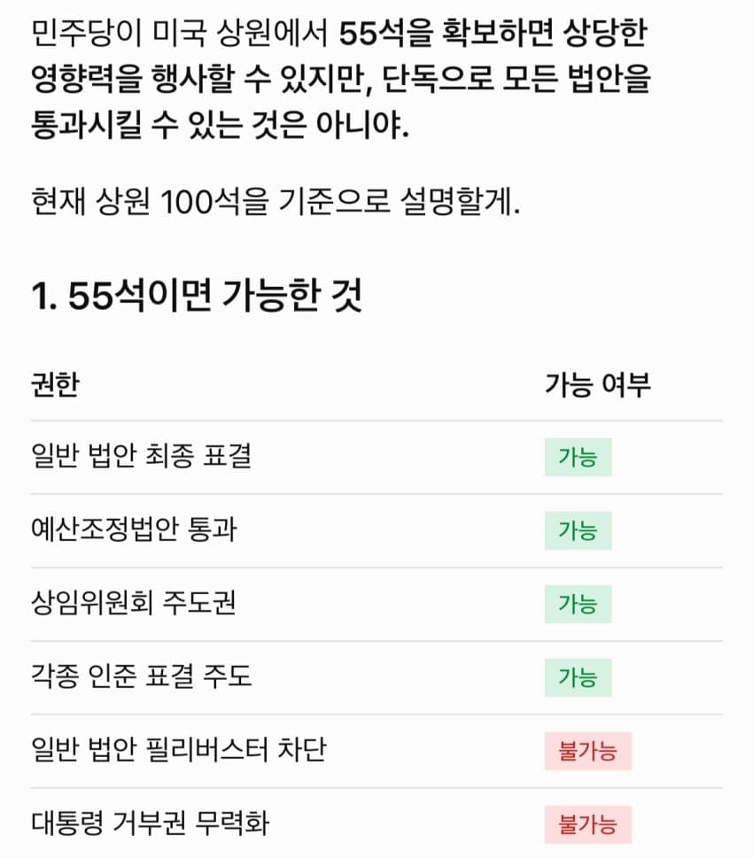
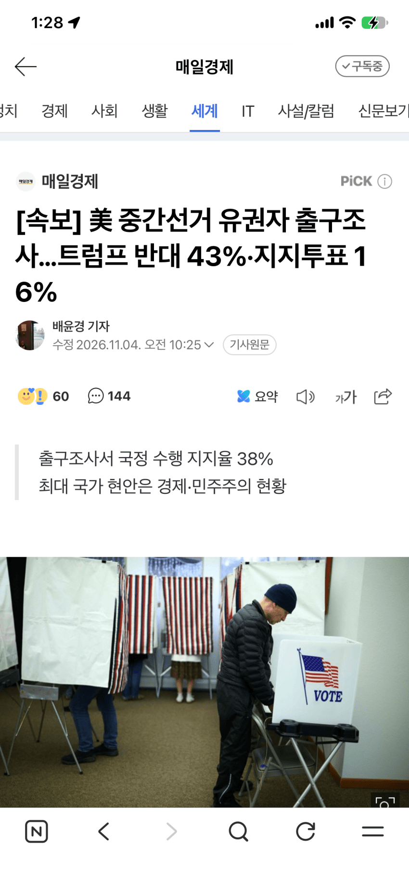
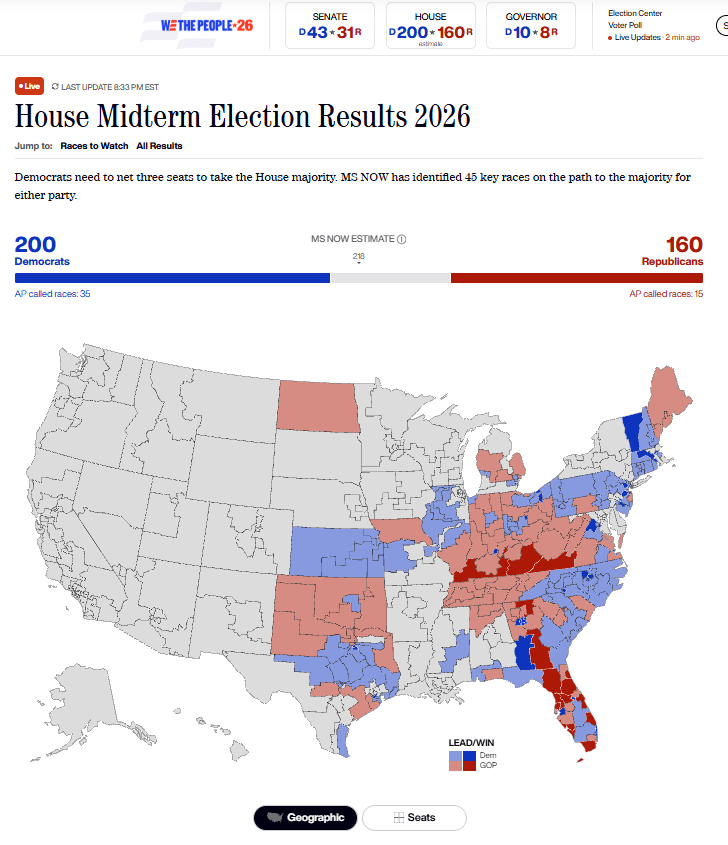
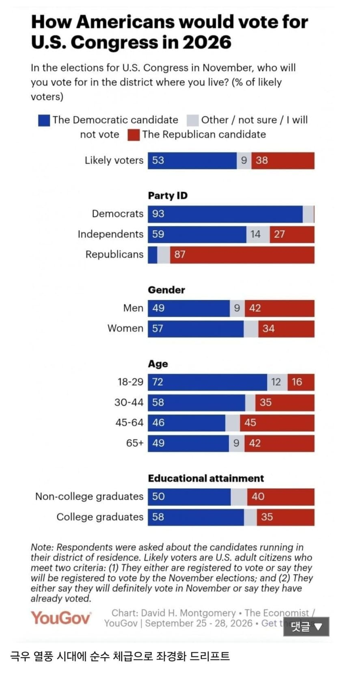
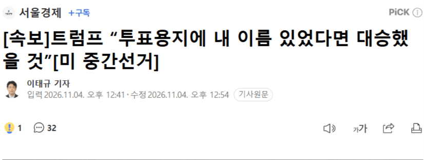
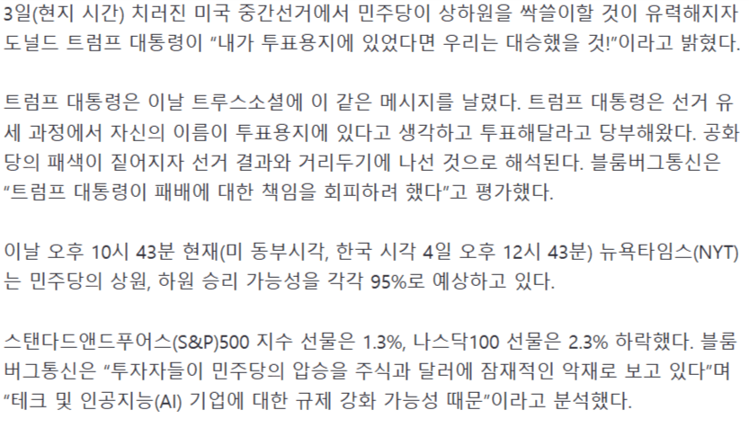

- 관련게시물 : 미국 선거 투표 개표 실시간 결과(출처 : ap뉴스)
줴제이야

- 트럼프 “중간선거 결과 수용 의향…민주당과 협력할 것”

- dc official App
노잼이노
- 5분전 실시간) ??? 각하 텍사스가 30년만에 민주당에 넘어갔습니다


상원
민주당 43:31 공화당
하원
민주당 200:160 공화당
주지사
민주당 10:8 공화당
아직 전체개표는 아니지만 동부 기준으론
민주당이 앞서는중

전세계 2030이 우경화중인데
홀로 72%가 좌경화되며
미국 2030을 민주당 지지자로 만듦
- 트럼프 “투표용지에 내 이름 있었다면 대승했을 것”


https://n.news.naver.com/mnews/article/011/0004678608?sid=104
댓글
댓글 보관 대기 중입니다. 원문 응답 오류가 있으면 다음 실행에서 다시 수집합니다.